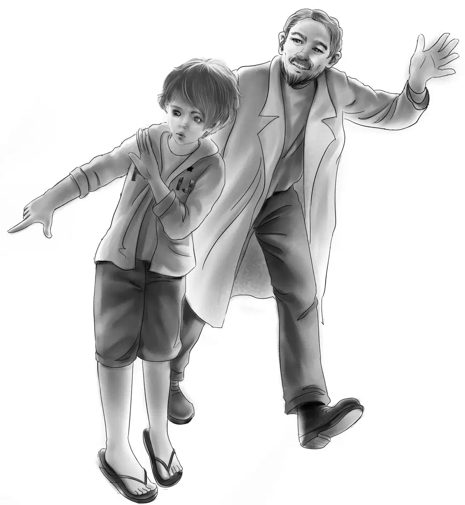
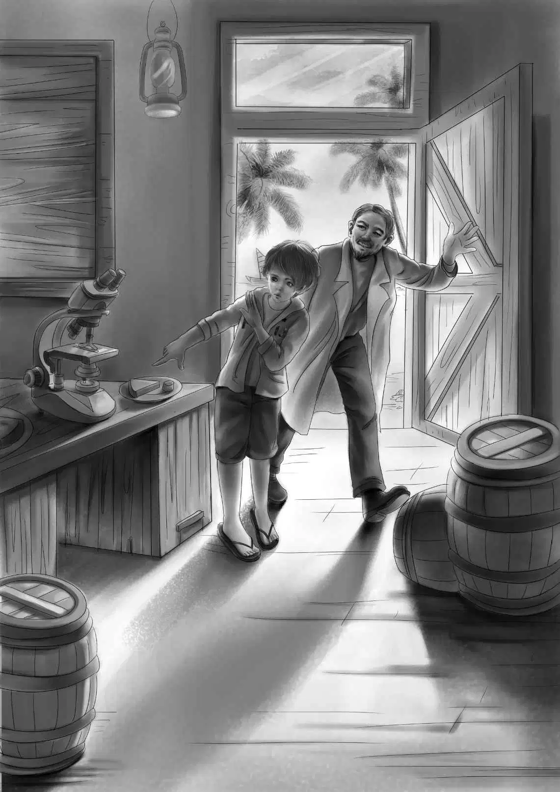
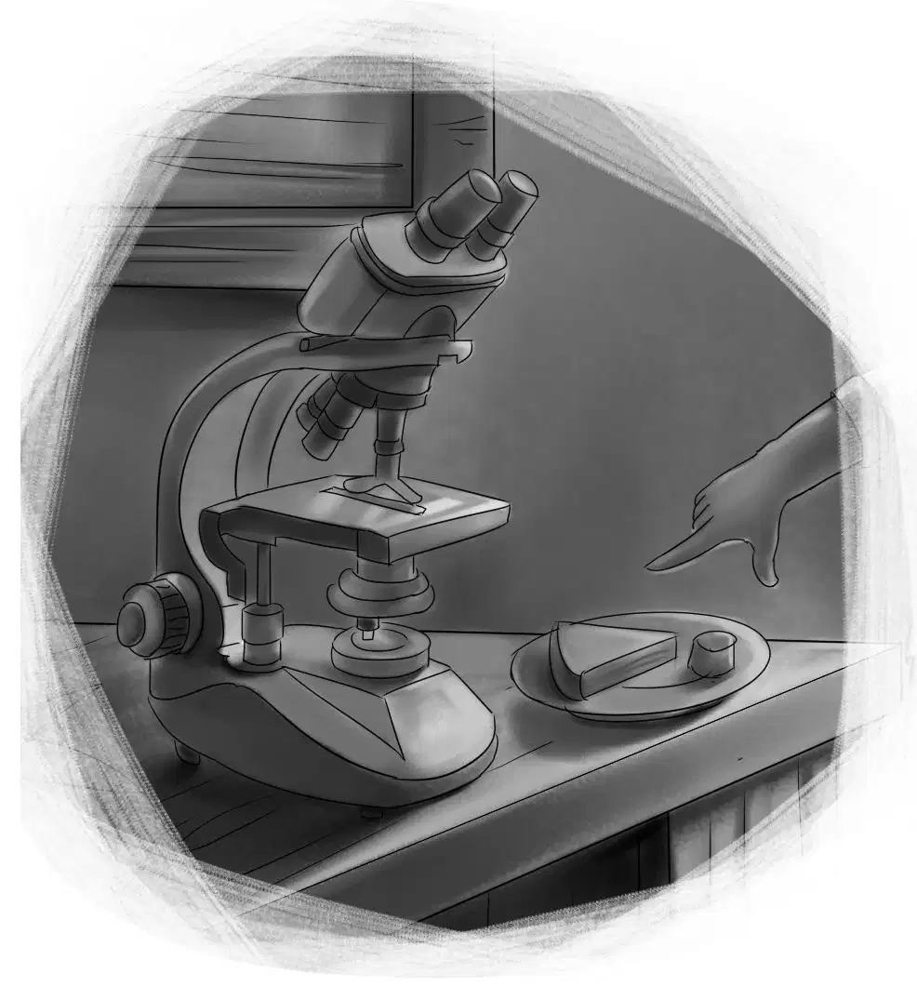

The next day was beautiful.The storm had gone.Everyone got up early and went downstairs to see how Larry was.Dr.Phillips came early,too.Mr.and Mrs.Cook were still there,sitting by the bed.
"How is the boy?" asked Mr.Alden.
"He is very much better," said Dr.Phillips."But he still doesn't know what he is talking about."
"Oh," said Benny,"I think he does."
"And I do,too,"said Henry."What is he saying?"
"Oh,the same old thing,about feeding the world.Will you tell me how that makes sense?"
"We'll show you,"said Henry,"if it's all right with Larry.That is better than telling.Mr.Cook and Grandfather,you can come with the doctor,too."
"I don't need to come," said Mrs.Cook smiling,"I know all about it.I used to take Larry his supper every night.Here is a key.Your dog always barked and I was sure you'd come out and question me.I'll stay with Larry now."
"Eat anything you see," said Larry,almost smiling.
Then the Aldens led the men down the path to the little white house.Mr.Cook said,"I never guessed a thing."
Benny said,"Larry comes to work here every night.We thought we smelled fish cooking." They all went in.
"What is this?" said Dr.Phillips,picking up a little cake.
"Well,"said Henry."I rather think it is a cake made of seaweed.It was baked in that pan."
"Try it," said Benny."Larry said we could." The doctor broke off a piece of the cake and tried it.
"How is it?" asked Benny.
"Not too bad,not too good," said the doctor.
"But why is Larry using seaweed?" asked Mr.Cook.
"There's a great deal of it," said Henry."Anyone can get it free.It could be made into food people could eat.It would help feed the world."
The doctor said slowly,"I know the Japanese use it,but they like it.They make cakes and candy and puddings."
"That is exactly right," said Henry."If we liked it,we could have all we wanted just for sending boats out after it."
Mr.Cook looked at Henry and said,"So that is what my boy was doing—trying to make seaweed taste good.He did know what he was talking about all the time."
"Then Larry is well if he is talking sense," said Dr.Phillips."Only he is still weak.He can get up when he feels able."
Dr.Phillips went on his way,and the rest went back to Larry.He was sitting up eating his breakfast.
"Tell us,Larry,what you were trying to do," said Grandfather,sitting down beside the bed.
"Oh,it is so interesting!" cried Larry."I had to do my experiments with seaweed because plankton wouldn't keep.Uncle Rich Snow always brought me some plankton from the South Seas.He had a refrigerator."
"We've been in that refrigerator," said Benny,laughing."We saw your white bags of plankton,but we didn't know then what it was."
"I like to look at the plankton under my microscope.But I do wish I had a large microscope.The plankton would be so beautiful.It's all colors and so many different kinds,and so small you can't see it at all without the microscope."
"We saw some plankton when we went to Blue Bay," said Henry.
"Then you know.If we could only make it good to eat,it would feed the world."
"Tell us about your experiments," said Mr.Alden.
"Well,I have tried a good many things.Of course I don't have much to work with.I mixed the jelly of the seaweed with flour and sugar and made cakes and fried them.They were not very good.Next time I was going to put in flavoring."
"Good work!"said Mr.Alden."You have done well all alone.Now you need help."
Then Grandfather went on talking to Mr.Cook."If you will let Larry go to Adams College,I will help you pay for it."
"Oh,no," said Mr.Cook."That isn't it! I have enough money.Captain Snow would have given us money,too.I just made up my mind that he couldn't go,and I hated to give in.You see I never had a chance for much schooling.I've done all right.I couldn't see why Larry needed to go to college.A waste of money,I thought." Mr.Cook stopped and then he added,"I guess I'm quick to lose my temper and slow to change my mind."

"I was like that,too," said Benny."I used to howl my head off."
Mr.Cook laughed.He said,"And you think I am howling now? All right.He can go."
Jessie looked at Larry.His eyes were shining.He had forgotten his breakfast.
Mr.Alden said,"Let's all sit down and talk about this.This is wonderful of you,Mr.Cook.You see,I know Adams College.Henry goes there.They have a teacher who could help Larry on this very work.He will work with Larry,I am sure."
Larry sat up straight.Watch went over and put his paws on the bed and wagged his tail.
"That settles it," shouted Benny."Now Larry is one of the family!"
